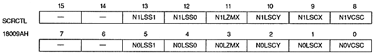

N0ZMHF | 180098H | bit 0 | for NBG0 |
N0ZMQT | 180098H | bit 1 | NBG0 |
N1ZMHF | 180098H | bit 8 | NBG1 |
N1ZMQT | 180098H | bit 9 | NBG1 |
NxZMQT | NxZMHF | Horizontal reduction display | Restrictions |
0 | 0 | No | None |
0 | 1 | 1/2 possible | Can only be set when the number of character colors is 16 or 256 |
1 | 0 | 1/4 | Can only be set when the number of character colors is 16 |
1 | 1 | 1/4 | Can only be set when the number of character colors is 16 |

Line scroll interval bit : Line scroll select bit (N0LSS1, N0LSS0, N1LSS1, N1LSS0)
N0LSS1,N0LSS0 | 18009AH | bits 5,4 | NBG0 |
N1LSS1, N1LSS0 | 18009AH | bit 13 , 12 | For NBG1 |
NxLSS1 | NxLSS0 | Interlace Settings | ||
Non-interlaced | Single-dense interlaced | Double dense interlace | ||
0 | 0 | line by line | Every 2 lines | Every line |
0 | 1 | Every 2 lines | Every 4 lines | Every 2 lines |
1 | 0 | every 4 lines | Every 8 lines | Every 4 lines |
1 | 1 | Every 8 lines | Every 16 lines | Every 8 lines |
N0LZMX | 18009AH | bit 3 | NBG0 |
N1LZMX | 18009AH | bit 11 | NBG1 |